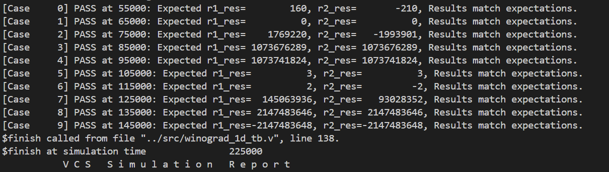
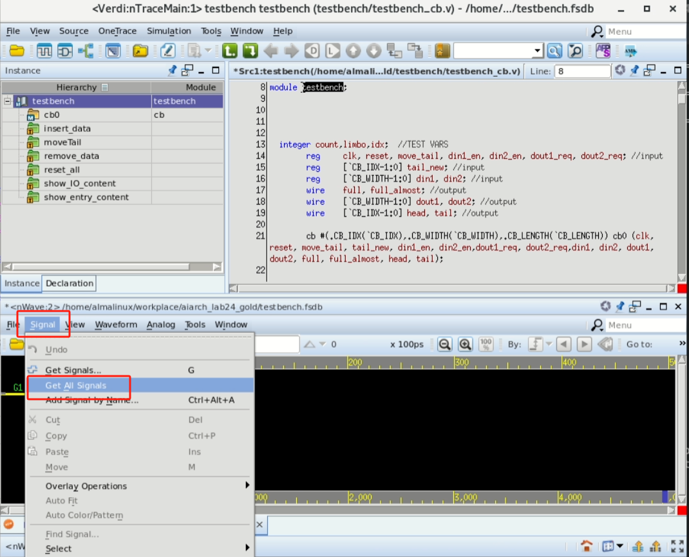

Lab 1 作业说明
1. 1D Winograd 实现 (50pts)
背景知识
- Winograd算法是一种用于加速卷积运算的高效算法，尤其在深度学习的卷积神经网络（CNN）中广泛应用。它通过减少乘法次数来优化计算，特别适合小尺寸卷积核。
- Winograd算法的核心思想是将卷积转化为多项式乘法，利用数论中的一些变换，将输入和滤波器映射到另一个空间进行更高效的计算。
- 例如对于一维卷积：
对于输入和滤权重，输出为2个元素。
- 原始计算方法：需6次乘法与4次加法。
- Winograd算法：通过变换将乘法次数降至4次（加法次数增加到8次），步骤如下：
- 将计算表示为：
其中：
- 将上面的计算过程写成矩阵的形式如下：，其中：
- 表示 Hadamard product，即对应位置相乘操作；
- 表示卷积核； 表示输入特征图（输入信号）；
- 表示卷积核变换矩阵；
- 表示输入变换矩阵；
- 表示输出变换矩阵；
有：
- 二维扩展：
通过嵌套一维变换实现，如，输入块为，输出为，乘法次数从36次降至16次。
任务介绍
本次Lab中，你需要借助AI生成完整的Verilog代码，实现一个卷积核大小固定的1D Winograd卷积计算单元。课程提供run目录中的运行文件和src目录中的Testbench，其余RTL文件仅提供空文件及文件组织要求，由你与AI完整编写。
TOP module位于winograd_1d.v中，模块名称和端口必须与课程Testbench一致。为保持原Testbench的验证时序，输入在时钟上升沿采样，结果在包含采样沿的第3个上升沿后有效。例如在25ns采样的输入，在45ns上升沿后输出。内部如何划分模块和实现流水线，由你与AI设计。
在完成后，你需要运行testbench来验证模块的功能。Testbench中包括计算的Golden Model，会自动比较你编写的模块输出与标准结果。
输入输出接口
顶层模块：winograd_1d
输入：clk：1 bit，上升沿时钟
rstn：1 bit，低有效复位
en：1 bit，本周期输入有效
r1_x、r2_x、r3_x、r4_x：各32 bit signed
r1_w、r2_w、r3_w：各32 bit signed
输出：r1_res、r2_res：各32 bit signed
vld：1 bit，本周期输出有效
r1_res = r1_x*r1_w + r2_x*r2_w + r3_x*r3_w
r2_res = r2_x*r1_w + r3_x*r2_w + r4_x*r3_w
输出按二补数32-bit整数解释；与原Golden Model一致，保留结果低32位。
en=1时每个上升沿接受一组输入；必须支持连续输入并按顺序输出。
采样沿为第1沿，第3沿后结果和vld有效；vld与对应输入en对齐。
复位清除结果和vld。

程序结构
下载Lab1运行文件与Testbench。将文件复制到自己的主目录；run/和src/winograd_1d_tb.v由课程提供，其余4个.v为空文件，需要你与AI完整编写。顶层接口必须遵守上方定义，内部子模块接口由你设计；所有文件须能通过给定文件列表一起编译。
winograd/
├── run # 课程提供
│ ├── Makefile
│ └── winograd.f
└── src
├── input_transform.v # 空文件，学生完整编写
├── output_transform.v # 空文件，学生完整编写
├── weight_transform.v # 空文件，学生完整编写
├── winograd_1d_tb.v # 课程提供，含Golden Model
└── winograd_1d.v # 空文件，学生完整编写Testbench 运行方法
课程TB保留原10组输入和直接卷积Golden Model。数值误差要求为0，结果含X/Z或vld无效均判为失败。输入在下降沿附近设置，比较在预期输出上升沿之后进行，避免采样竞态。运行日志应有10条PASS及ALL PASS；出现ERROR、FAIL或编译错误均未通过。不得修改Golden Model、测试向量或检查条件来使设计通过。
不显示波形
进入 run 目录，运行 make rerun 即可运行模拟，同时不会显示波形，由于该操作不依赖于GUI，可以在VS Code中直接使用。由于在testbench中设置了 $monitor 命令，会输出不同时刻的计算结果，可以用于验证结果是否正确。
显示波形（使用verdi）
配合Verdi，可以显示电路运行过程中的波形。进入 run 目录，运行 make all 即可进行模拟并显示波形。由于依赖GUI，这一步骤需要使用远程桌面。
如运行成功，会自动弹出Verdi窗口，在Verdi窗口中，选择下方 Signal - Get All Signals 即可显示所有波形。


清除运行产生的临时文件
只要运行 make clean 即可清除所有运行产生的临时文件。
2. CORDIC算法 (50pts)
背景知识
- CORDIC（COordinate Rotation DIgital Computer）算法是一种基于迭代逼近的方法，通过一系列简单的加减法、移位以及查表操作实现三角函数等的计算。这种算法适用于硬件实现，无乘法器，降低芯片复杂度和功耗，特别适用于 FPGA、ASIC 等嵌入式系统。
- 工作原理：CORDIC 算法通过逐步旋转向量，将目标角度分解为一系列预定义的基本旋转角，每次旋转只需执行移位和加减法操作，从而逼近最终的旋转结果。算法可用于两种模式：旋转模式（计算旋转后的坐标）和向量模式（求取向量的幅值和相位）。
- 关于CORDIC具体的介绍可以参考以下资料：
任务介绍
本Lab中，你需要借助AI完整编写旋转模式的CORDIC计算模块，用于计算cos和sin函数。课程提供run目录中的文件和src目录中的Testbench；cordic.v仅提供空文件，由你与AI完整实现。
模块位于cordic.v，顶层名称为cordic，接口应与给定Testbench一致。你需要完成以下步骤：
- 由于CORDIC算法的收敛范围有限，你需要在开始迭代前，通过三角恒等变换，将输入转换到合适的象限；
- 进行迭代计算，本程序中设定的迭代次数为16次。
在完成后，你需要运行testbench来验证模块的功能。Testbench中包括计算的Golden Model，会自动比较你编写的模块输出与标准结果。
输入输出接口
顶层模块：cordic
端口顺序：clock, xstart, ystart, zangle, xout, yout, done
输入：clock：1 bit，上升沿时钟（TB时钟周期4ns）
xstart、ystart：各16 bit signed，初始向量
zangle：32 bit角度编码（接口可声明signed，按位模式解释）
输出：xout、yout：各16 bit signed
done：1 bit，保留该输出端口
角度 = unsigned(zangle) / 2^32 * 360°。
0x20000000=45°，0x40000000=90°，0x80000000=180°，0xC0000000=270°。
TB设置xstart=round(32000/1.64676)=19432，ystart=0。
此时xout≈32000*cos(角度)，yout≈32000*sin(角度)。
输出为缩放后的有符号整数，与原TB一致。
输入保持稳定至少16个上升沿后，输出须稳定并符合误差要求。
原TB在角度更新70ns后读取xout/yout，不通过done触发比较。
接口无复位、start或busy端口。程序结构
下载包中的cordic/包含课程提供的运行文件和Testbench；请用AI生成空文件cordic.v中的完整实现。使用给定端口名称及顺序，确保Testbench可以直接实例化你的模块。
cordic/
├── run # 课程提供
│ ├── cordic.f
│ └── Makefile
└── src
├── cordic_tb.sv # 课程提供，含Golden Model
└── cordic.v # 空文件，学生完整编写Testbench 运行方法
Testbench 运行方法与 Winograd的一致。可以参考上方的介绍。
提交时保留下载包目录结构，将两个任务目录与实验报告打包。报告说明AI生成与修改过程、接口和时序设计，并附Golden Model对比结果及必要波形。课程提供的run与TB文件应保留；其余RTL须由学生完成。
课程TB保留原10个角度：45°、15°、30°、60°、75°、90°、180°、270°、359°和57°。Golden Model使用32000*$cos及32000*$sin并转换为整数，两个输出的绝对误差均须不超过8。含X/Z的输出判为失败。日志应有10条PASS及ALL PASS。课程run文件使用VCS/Verdi环境，按原说明运行make rerun或make all。
3. Bonus (Extra 50pts)
如有兴趣完成bonus任务，完成其一即可拿到bonus分数。
实现基于CORDIC的FFT
要完成此项任务，你需要完成一个8-point DIT-FFT
FFT 是一种将离散傅里叶变换（DFT）高效计算的算法。
Cooley–Tukey 算法是最常见的 FFT 实现方法，通过递归地将 DFT 分解成若干较小的 DFT，从而大幅降低计算复杂度。利用“蝶形运算”（butterfly operation），将输入数据按照特定方式重新组合，并在递归分解过程中使用周期性和对称性的特性进行高效计算。
可以参考Project页面提供的资料。
2D Winograd
2D Winograd可以由1D Winograd外推得到，假设一个卷积核尺寸为3x3的二维卷积，假设每次我们输出2x2个卷积点，则我们形式化此问题：F(2x2, 3x3)，你需要实现的模块就为这一尺寸。
因为输出为2x2，卷积核大小为3x3，对应的输入点数应该为4x4。
本选做项同样可使用AI生成完整RTL。顶层命名为winograd_2d，使用clk、rstn、en、vld及与1D相同的输入输出时序；x_flat[511:0]按4×4行优先打包32-bit signed输入，w_flat[287:0]按3×3行优先打包32-bit signed权重，res_flat[127:0]按2×2行优先打包32-bit signed输出。每个输出为对应3×3直接卷积结果的低32位。课程提供的两份基础TB不覆盖本选做项，需要自行提交含直接二维卷积Golden Model的Testbench及运行文件。
可以表示为：

也就是分块矩阵：

形式上与1D Winograd就一致了。
可以参考Project页面提供的资料。